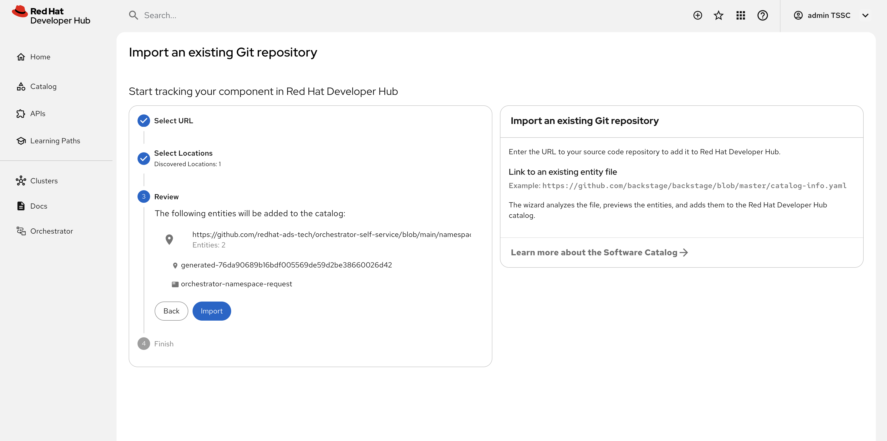
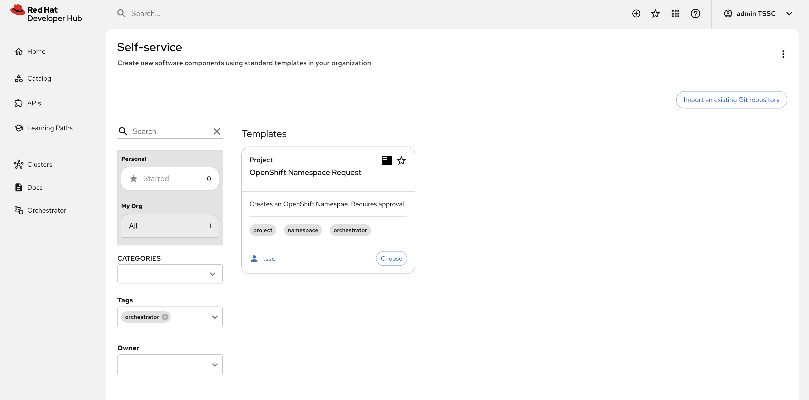
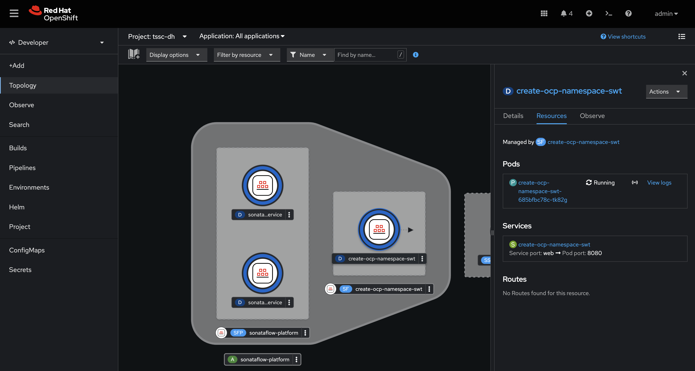
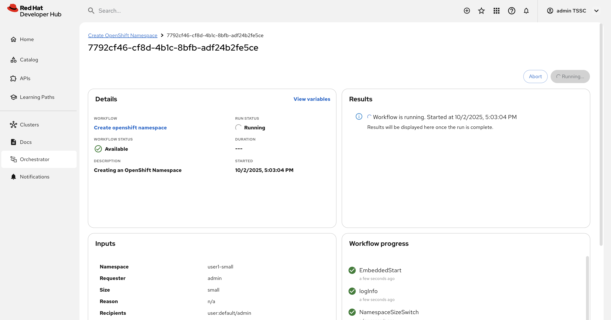
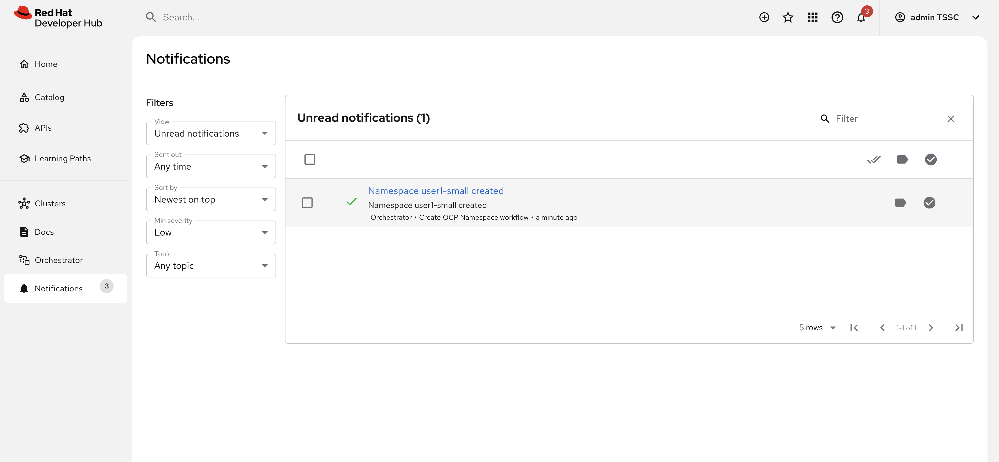
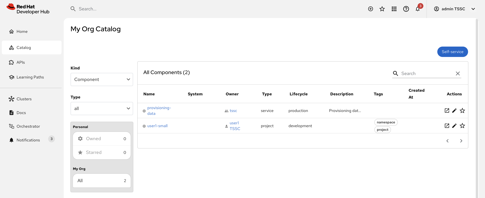
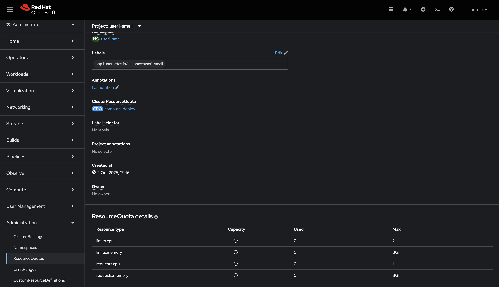
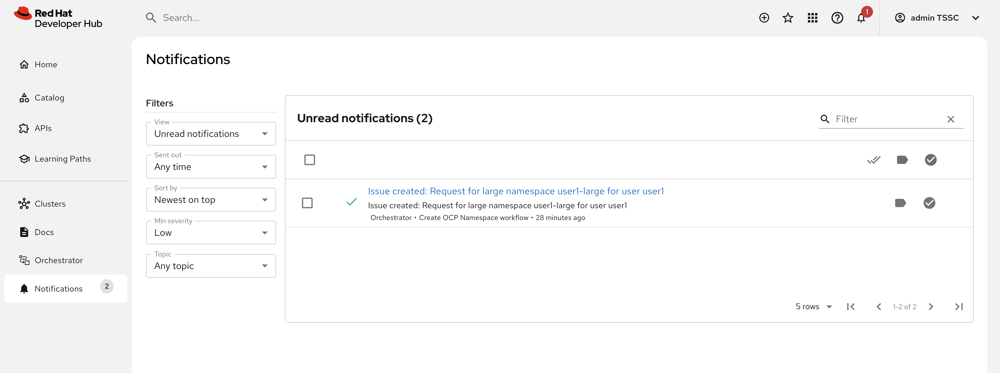
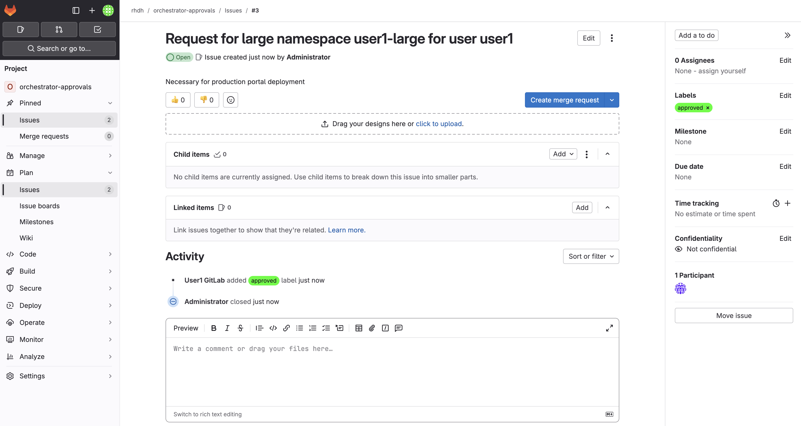

Workflows with State and Integrations
Now you will implement a stateful use case for developer self-service using the Orchestrator: requesting a namespace on an OpenShift cluster. The namespace has limited resources, defined by resource quota and limit ranges. In our case, the namespaces come in two sizes, small and large.
To illustrate the possibilities of the Orchestrator plugin, when a developer requests a large namespace in an OpenShift cluster the namespace requires approval.
Understanding the Workflow
The serverless workflow used in this section is stored in redhat-ads-tech/orchestrator-self-service-workflows on GitHub. The repository structure is as follows:
-
create-ocp-namespace-swt: Contains the workflow definition and dependencies (API specifications and JSON schemas)
-
scripts: Files used to build the production-ready workflow container image and generate deployment manifests.
-
charts: The Helm Chart used to deploy the workflow. The templates with a numeric prefix are autogenerated
-
resources: Contains a Dockerfile used to build the workflow container image
Additionally, GitHub Actions is used to to build and release new versions of the container image and Helm Chart whenever the version number in the pom.xml in create-ocp-namespace-swt/ folder is updated.
Serverless Workflow: Functions
View the serverless workflow file: create-ocp-namespace-swt.sw.yaml. You can see that it defines a set of functions upfront. These functions are used to:
-
Interact with GitLab Issues using the GitLab REST API (note references to the specs/gitlab-openapi.yaml)
-
Run Software Templates and send notifications to Red Hat Developer Hub users (again via REST endpoints defined in specs/notifications-openapi.yaml)
-
Evaluate results and perform data transformation using jq expressions for the final workflow output (note the use of a
result.messagethat matches the workflow-output-schema.json structure).
Serverless Workflow: States
As mentioned earlier, a serverless workflow is a set of states and rules for transitioning between them - a Finite State Machine.
Following the functions a set of states are defined, including a start.stateName that references the NamespaceSizeSwitch. This switch determines whether the workflow transitions into the LaunchSoftwareTemplate or GetGitlabProjectId state, based on the provided namespace size - large namespaces trigger the GitLab approvals flow.
Assuming the user requested a large namespace, the first state transition is to GetGitLabProjectId. This state calls the getProjectId function declared in the functions block.
- name: GetGitlabProjectId
actionMode: sequential
actions:
- name: GetGitlabProjectId
actionDataFilter:
toStateData: .getProjectIdResult
useResults: true
functionRef:
arguments:
search: orchestrator-approvals
simple: true
invoke: sync
refName: getProjectId
transition:
nextState: CreateIssueThe actionDataFilter instructs the workflow to update the overall workflow state (useResults: true), and store the result of the getProjectId call under a getProjectIdResult property.
The workflow then transitions to the CreateIssue state and reads the project ID from the the getProjectIdResult and creates an issue that can be used to approve or deny the creation of the large workspace.
After the issue is created, the workflow will continuously transition between the the PollIssue and CheckIssueStatus states until an approved or denied label is found in the issue’s labels. The PollIssue state sleeps for a Period of Time before running - specifically 60 seconds as represented by PT60S.
Serverless Workflow: Output
When an end state is reached, e.g CloseIssueDenied, it declares this fact using the end.terminate: true property.
- name: CloseIssueDenied
type: operation
actionMode: sequential
actions:
- actionDataFilter:
useResults: true
functionRef:
invoke: sync
refName: errorDeniedResult
name: setOutput
- actionDataFilter:
toStateData: .closeIssueResult
useResults: true
functionRef:
arguments:
id: .getProjectIdResult[0].id|tostring
issue_iid: .createIssueResult.iid
state_event: close
invoke: sync
refName: closeIssue
name: CloseIssue
end:
terminate: true
metadata:
errorMessage: '"Creation of namespace " + .namespace + " denied"'Additionally, this state uses functionRef to invoke one of the expression functions defined earlier. For example, assume errorDeniedResult is invoked. This will set the result to "Creation of namespace <the namespace name> denied" and attach the link to the associated GitLab Issue by placing it in the outputs of the workflow output.
Configure Red Hat Developer Hub for the Advanced Workflow
The advanced workflow will use the notification plugin to keep users updated on the execution of their namespace request. Make sure the plugin is enabled.
Enable Notifications
-
Visit the tssc-dh namespace in the OpenShift Web Console.
-
Open the YAML editor for the tssc-developer-hub-dynamic-plugins ConfigMap, and verify that the notification plugins are enabled.
-
If they’re missing or disabled make sure to update the ConfigMap to add them like so:
- disabled: false package: ./dynamic-plugins/dist/backstage-plugin-notifications - disabled: false package: ./dynamic-plugins/dist/backstage-plugin-notifications-backend-dynamic - disabled: false -
Scroll down and click Save.
Enable Token-Based API Access
Backstage, and therefore Red Hat Developer Hub supports token-based API access. Update the Red Hat Developer Hub configuration to enable this feature.
-
Open the YAML editor for the tssc-developer-hub-app-config ConfigMap.
-
Update the
backend.authsection to enableexternalAccess- do not replace or remove existing properties in thebackendobject:backend: auth: externalAccess: - type: static options: token: ${BACKEND_SECRET} subject: Orchestrator -
Scroll down and click Save.
The BACKEND_SECRET environment variable being referenced is already used as a session signing secret. In a production scenario you should add a new environment variable by mounting a Secret with a securely generated token, e.g using the openssl CLI:
openssl rand 24 | base64 | cut -c1-32For now, the BACKEND_SECRET is fine.
Import Software Templates for Developer Self Service
In the previous section you learned that the workflow that will launch a software template to create the namespace for the developer.
Before deploying the workflow itself, you need to import the software template that it will use to create namespaces.
-
Login to Red Hat Developer Hub as the {openshift_admin_user} user using the passowrd
{openshift_admin_password}. -
Click the self-service icon (the + plus) in the top-right corner of the UI.
-
Click the Import an existing Git repository button.
-
Enter the following URL in the Select URL field and click Analyze:
https://github.com/redhat-ads-tech/orchestrator-self-service-templates/blob/main/namespace/template.yaml -
You’ll be asked to review the entities being imported, as shown:

-
Click Import when prompted.
-
Select the self-service icon (the + plus) icon on the top navigation bar, then filter by setting the Tags to
orchestratorto see the new template.
The software template to create a namespace is not meant to be used directly, but rather through an Orchestrator Workflow. While it is visible (and usable) it should be hidden using RBAC rules in production.
The OpenShift Namespace Request software template is annotated with the backstage.io/managed-by: orchestrator annotation, as can be seen in the template file in GitHub. Additionally the template has an orchestrator tag that can be used to find it more easily in the self-service list, as seen in the previous screenshot.
Deploy the Serverless Workflow
As a reminder, workflows are deployed using the SonataFlow Custom Resource. You’ll use a Helm Chart to deploy the various resources associated with this advanced workflow.
-
Return to the OpenShift Web Console and open a Web Terminal.
-
Enter the following commands:
-
Set the current project context to tssc-dh:
oc project tssc-dh -
Add the Helm repository that contains the advanced self-service workflows:
helm repo add advanced-workflows https://redhat-ads-tech.github.io/orchestrator-self-service-workflows/ -
Define pre-requisite authentication tokens first:
export BACKSTAGE_TOKEN=$(oc get secret tssc-developer-hub-env -n tssc-dh -o jsonpath='{.data.BACKEND_SECRET}' | base64 -d) export GITLAB_TOKEN=$(oc get secret root-user-personal-token -n gitlab -o jsonpath='{.data.token}' | base64 -d) -
Install the namespace request workflow, passing the tokens and URLs to your Red Hat Developer Hub and GitLab instances as Helm environment variables:
helm install request-ns advanced-workflows/create-ocp-namespace-swt -n tssc-dh \ --set env.backstageBackendUrl="https://backstage-developer-hub-tssc-dh.{openshift_cluster_ingress_domain}" \ --set env.backstageBackendBearerToken="$BACKSTAGE_TOKEN" \ --set env.gitlabUrl="https://gitlab-gitlab.{openshift_cluster_ingress_domain}" \ --set env.gitlabToken="$GITLAB_TOKEN"
-
| The tokens used in this example have broad permissions. Create and use tokens with the minimum required permissions in production environments. |
The GitLab parameters are required by the workflow to open and observe issues in the rhdh/orchestrator-approvals issue tracker. These issues are used to deny or approve large namespace requests.
The Red Hat Developer Hub parameters are used by the workflow to send notifications to the developer using the Backstage Notifications API.
After the Helm install completes, a create-ocp-namespace-swt SonataFlow node will appear in the Topology View.

Execute the Serverless Workflow
Before proceeding, logout of Red Hat Developer Hub as the {openshift_admin_user} and login as {rhdh_user} using the password {rhdh_user_password}.
-
Select the Orchestrator item in the left-hand menu of Red Hat Developer Hub.
-
Click on the Create OpenShift Namespace workflow.
If the workflow isn’t listed, delete the Red Hat Developer Hub Pod to force a refresh of all workflows. 
-
The workflow definition is shown.

The workflow itself is pretty simple. If the user requests a small or medium namespace, the workflow launches the relevant software template. It then checks the state of the software template execution and notifies the user of success or failure.
If a large namespace is requested, the request needs to be approved. GitLab Issues in the orchestrator-approvals repository is used as a ticketing system - ServiceNow or Jira or an equivalent system could be used instead. If the request is approved, the software template is executed and the user notified. If the request is denied, the user is notified as well, but no namespace is created.
-
Click on the Run button at the top right of the screen to start an instance of the workflow.
-
You are presented with a form to enter the details of your request. Let’s start with a request for a small namespace. Fill in the form as follows:
-
Namespace name:
{rhdh_user}-small -
GitLab Host
gitlab-gitlab.{openshift_cluster_ingress_domain} -
Requester:
{rhdh_user} -
Size:
small -
Reason: you can leave this blank
-
Recipients:
user:default/{rhdh_user}If you are logged in to Red Hat Developer Hub as the adminuser, changeuser:default/{rhdh_user}touser:default/admin.
-
-
Click on Next to review your request.
-
Click on Run to start the workflow execution.

-
After a few seconds the status of the workflow moves to Run completed.

-
Select the Notifications item in the left-hand menu.
-
Notice a notification that the namespace
dev1-smallhas been created.
-
If you click on the notification link, you will see the component that was created as a result of the execution of the software template.

-
Visit the namespace in the OpenShift Web Console in your OpenShift cluster. If needed, login as
{openshift_admin_user}/{openshift_admin_password}. -
Click on Administration/ResourceQuotas and Administration/LimitRanges on the left-hand side menu to see the Resource Quota and Limit Ranges defined as part of the creation of the namespace.

Test the Workflow’s Approval Process
-
Return to Red Hat Developer Hub to run another instance of the workflow, this time for a large namespace request.
-
Select the Orchestrator item in the left-hand menu.
-
Click the Run icon on the right of the Create OpenShift Namespace workflow name.
-
Fill in the form as follows:
-
Namespace name:
{rhdh_user}-large -
GitLab Host
gitlab-gitlab.{openshift_cluster_ingress_domain} -
Requester:
{rhdh_user} -
Size:
large -
Reason:
Required for a production deployment… -
Recipients:
user:default/{rhdh_user}If you are logged in to Red Hat Developer Hub as the adminuser, changeuser:default/{rhdh_user}touser:default/admin.
-
-
Click on Next and Run to start the workflow.
-
Select the Notifications item in the left-hand menu. After a couple of seconds you will see a notification that an issue has been created in GitLab.

-
Click on the link of the notification. This opens the issue in GitLab.

-
GitLab is not a ticketing system. To mimic the behavior of a ticketing system, we use labels on the issue to mark the request as approved or denied.
-
Make sure you are logged in into GitLab as
{gitlab_user}/{gitlab_user_password}. -
Click on the Edit button next to Labels on the right.
-
Select the Approved label.
-
To actually add the label, you need to click on a different area of the page, outside of the Labels area.
-
-
Return to Red Hat Developer Hub. After a while you should see a notification that the namespace
{rhdh_user}-largehas been created.
The workflow instance checks the status of GitLab issue every 60 seconds. When the workflow detects the approved label on the issue, it proceeds to create the namespace using the software template, and closes the ticket afterwards.
-
You can check the namespace in the OpenShift console in your OpenShift cluster. Also notice that the Issue in GitLab has been closed by the workflow.

-
Feel free to create another request for a large namespace, but this time label the issue as denied. In this case, you should see a notification in Red Hat Developer Hub that the request was denied, and there should be no namespace created in OpenShift.
Conclusion
In this module you learned how the Red Hat Developer Hub Orchestrator plugin, in combination with Serverless Workflow on OpenShift enables more complex workflows that go beyond what Software Templates can do. The possibilities are endless, and in this module we illustrated these possibilities with a relatively simple example that involves approval and notification as part of a developer self-service experience.